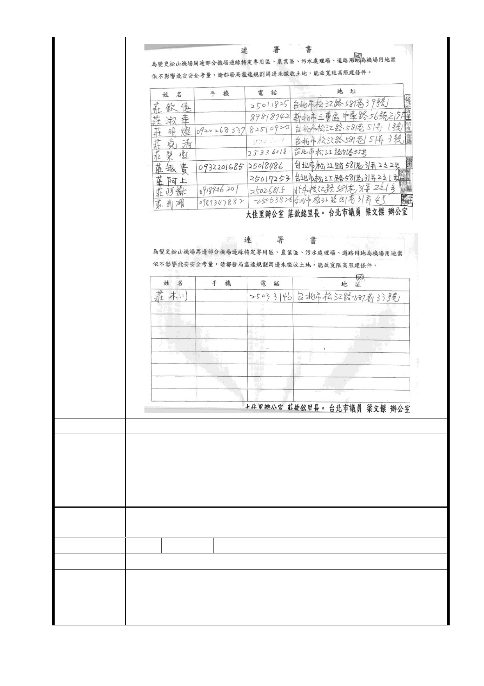

建議辦法
市府回應
意見
1. 機場增設「機場跑道、跑道燈光及淨空區」，無涉「航空站飛
行場助航設備四周禁止限制建築物及其他障礙物高度管理辦
法」之規定，增設後機場之禁限建管制範圍不變。
2. 有關機場周邊土地，將納入「松山機場暨周邊地區土地整體
發展計畫」檢討因應配套措施。
委
決
員
會
議
同「市府回應意見」
編 號 19 陳情人 莊○墩等 3 人
陳 情 位 置 中山區大佳段二小段 8○6 地號
1.本地號產權雖為台北市政府所有，但屬於三七五減租耕地，目
陳情理由
前有多位承租人承租耕作中，依耕地三七五減租條例，承租戶
具有土地三分之一之法律保障地位。
2.依據公展資料，本地號南側將有一狹長區域未納入機場用地範
- 29 -